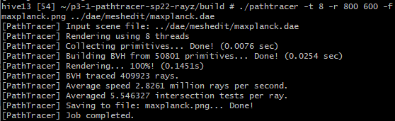

Part 1:
1.1: In this part, I implemented the ray generation and primitive intersection parts of the rending pipline. My approach to do this was to follow the spec and generate camera rays in the correct space and coordinate system, generate pixel samples to estimate the color of a pixel, perform ray-triangle intersection, and perform ray-sphere intersection. To generate the camera rays, I converted from normalized image coordinates to a ray in the world space by following the mathematical relationships as defined in the spec. To generate pixel samples, I used Monte Carlo sampling to generate a certain number of random rays, uniformly sampled over the entirety of the pixel, and averaged the color of these samples to get an estimated color for the whole pixel. To perform ray-triangle intersection, I used the optimized Moller Trumbore Algorithm as defined in the lecture slides. To perform ray-sphere intersection, I used the Ray Intersection With Sphere algorithm using the quadratic formula that was shown in the lecture slides and recommended in the spec. After initially implementing Task 1 and 2 of this part, I ran into the issue that my image was just a constant color. After printing out various intermediate variables, I found that my issue was not properly normalizing and not properly initializing nClip and fClip in generate_ray. The other big issue I ran into was for Task 4, and my problem was that the colors of the sphere were correct but on the wrong sides of the sphere when the image was rendered. I checked piazza and it turned out someone else had the same exact problem and following their recommendation, I checked my t1 and t2 doubles to make sure I set the right one to the ray's max. Once I fixed that, it worked. Another really big bug I encountered was that if I ran my pathtracer.exe through Git, I had to rebuild all of my project for my changes to be reflected, even if I saved the files. To save myself time, I figured out how to use multiple args on launch.vs.json and the debugging process went much quicker once I could just press run in VSCode to test instead of having to wait for a full rebuild.
1.2: The triangle intersection algorithm I used was based on the Moller Trumbore Algorithm as presented in Lecture 9. The general idea behind this algorithm, and many other triangle intersection algorithms, is to consider the plane that the triangle is lying on, and then see if the point on the plane where the ray hits is inside the triangle. This part trivially resolves to evaluating if a given point is inside a triangle, which we've done before with Barycentric interpolation or cross products. The Moller Trumbore Algorithm is simply one way to try and optimize all these calculations. As for my implementation, I basically just followed the algorithm, except that for the actual project, one extra important thing we have to do is set the ray's max_t attribute. What this does is it essentially keeps track of the nearest intersection and ignores any intersections that are further away so that we don't need to compute them.
1.3:


Part 2:
2.1: How my BVH construction algorithm works is it first loops through all of the primitives from start to end and counts the number of nodes, fills a new bounding box, and keeps track of all the centers of the primitives' bounding boxes. At this point, if the number of nodes passed in is less than or equal to max_leaf_size (a parameter we are given to define the maximum size of the leaf), then this is our base case and we just return a new BVHNode as no splitting is needed. However, in the case we have more primitives passed in than can fit in one leaf, we enter our recursive case in which we split the primitives into two groups and then recursively call our BVH construction algorithm on each of the two groups until they eventually satisfy the base case. In my case, the specific split algorithm I used was to split along the longest axis. To find the longest axis, during the initial loop through the primitives passed in, I created a new bounding box to keep track of all the centers of the bounding boxes of the primitives, and this new bounding box essentially defined an overall bounding box that encapsulated all of the centers of the primitives' bounding boxes. From this, I can just analyze the dimensions of this overall bounding box to find which dimension is the largest. I chose this heuristic because it seemed like it would be a good estimate to approximately cut the primitives into two equal groups, though I also tried looking at the average centroid. An important note about this BVH construction algorithm is that it doesn't require extra memory when executing the recursive cases. When splitting a group of primitives into two, the algorithm doesn't pass copies of the two groups into the recursive functions. Instead, iterators that reference the original vector are passed into recursive calls, so we use the same version of the values with each recursive call. We do everything in the original memory so we don't have to make copies of the data, much like an in-memory sort.
2.2:
2.3: On my personal desktop, which has a GTX 960, looking at cow.dae with 8 threads and a resolution of 800 by 600, without BVH acceleration it takes just over 2 minutes.
However, once BVH acceleration is implemented, it takes just 1.5 seconds.
This factor of speedup also seems consistent on the lab computers, which take about 40 seconds to render cow.dae without BVH acceleration and a fraction of a second to render it with BVH acceleration. This speedup is also seen in maxplanck.dae and beast.dae, which took so long to render without BVH acceleration that I just gave up, but with BVH acceleration on the lab computers, it took a fraction of a second. I experienced a little bit of speed up (x4) when I implemented the bounding box intersection testing and constructed the BVH tree but the real speedup happened (~x50-100) when I made sure to only check intersections in the primitives of a BVHNode instead of all primitives.
Part 3:
3.1: The first implementation of direct lighting I implemented was estimate_direct_lighting_hemisphere, which estimates the direct lighting on a given point by uniformly randomly sampling in a hemisphere around it. In this implementation, we first shoot out a ray from the camera to a pixel on the scene, and to estimate how much light arrived at the intersection point, we integrate over all the light arriving in a hemisphere around the point. Hence, this is why it is called estimate_direct_lighting_hemisphere. We estimate by sampling entering ray directions within a hemisphere around the point, and it's also direct lighting because we only care if the sampled ray directly intersects a source of light. In our computation stage, instead of actually doing the integral we approximated by summing up various samples using a Monte Carlo estimator. Once we have an approximation for the amount of light is being taken into the point, we can adapt the reflectance equation from lecture to compute the amount of outgoing light. Walking through my actual implementation, I repeated num_samples times and uniformly sampled a hemisphere using the built in hemisphereSampler, created a ray with coordinates in the right system, and then checked to see if there was direct intersection with a light source. If there was, then I added the effects of that ray, and in the end, I aggregated all the results together, dividing by p_wi and num_samples to normalize. I also had to use EPS_F, a very small float constant, in my implementation to avoid numerical precision errors. The second implementation of direct lighting I implemented was estimate_direct_lighting_importance, which, similarly to estimate_direct_lighting_hemisphere, estimates the amount of direct lighting on a given point. However, instead of sampling from a uniform hemisphere around the point, it will sample all of the lights directly. To do this, we look at rays between every light source and a certain point of interest, while also making sure there is nothing blocking the light ray from hitting the point of interest. The rest is the same as estimate_direct_lighting_hemisphere: we use the reflectance equation from lecture. For my acutal implementation, similarly to estimate_direct_lighting_hemisphere, we need to use ESP_F, a very small float constant, to offset calcaultions for numerical precision issues, and we are given a sampler, in this case it's sample_L. We loop through every light and for the number of samples, as determined by ns_area_light or is_delta_light() in the case of point light sources with just one sample. In the end, we aggregate all our results together and normalize by the number of samples and the probability density.
3.2: (-s 64, -l 32, -m 6)
Hemisphere Bunny
Importance Bunny
Hemisphere Sphere
Importance Sphere
3.3: (-s 1, -l var, -m 6)
L = 1
L = 4

L = 16
L = 64
3.4: When it comes to results, uniform hemisphere sampling has much more noisy results than importance lighting sampling. This can be seen in Part 3.2, where the scenes rendered with hemisphere lighting have much more fuzzy noise than the same scenes rendered with importance lighting. In theory, uniform hemisphere sampling could eventually converge with enough samples and rays per pixel so with high enough samples uniform hemisphere can have as little noise as importance lighting sampling, but given the same parameters importance lighting sampling will have significantly less noise.
Part 4:
4.1: Indirect lighting is pretty similar to direct lighting, except that each ray can "bounce" multiple times off of objects to hit multiple pixels through it's life span. This multiple bouncing logic is implemented through recursion, in which we keep calling at_least_one_bounce_radiance and adding the results together. Of course, without a stopping condition, this would continue forever. In our case, our stopping condition is the max_ray_depth and Russian Roulette, which gives each bounce (except the first) a random chance to terminate with a certain probability. I chose a termination probability of about 31% while the spec recommends somewhere between 30% and 40%, so my scenes, on average, might be rendered with slightly less indirect lighting than someone who chose a termination probability closer to 40%. The actual calculation of the lighting amount on the pixel is similar to Task 3, in which we sample a ray and only check add it to the amount of light there if they intersect, and we also normalize by the probability density. In total, the entire lighting function of the scene incorporates both direct and indirect lighting together conceptually by adding the zeroth bounce, first bounce, and any subsequent bounces together (though in the code, the first bounce is grouped in with the subsequent bounces in the at_least_one_bounce() function).
4.2: (-s 1024, -l 16, -m 3)
4.3: (-s 1024, -l 16, -m 2) (no hemisphere lighting)
Direct lighting:
Indirect lighting:
4.4: (-s 1024, -l 16, -m var)
M = 0
M = 1
M = 2
M = 3
M = 100
4.5: (-s var, -l 4, -m 3)
S = 1
S = 2
S = 4
S = 8
S = 16
S = 64
S = 1024
Part 5:
5.1: My implementation of adaptive sampling is similar to normal sampling, however, in adaptive sampling, we don't necessarily take num_samples number of samples. Instead, that is the maximum number of samples we could take, though for many pixels, we can short-circuit out early because some pixels converge faster and don't need as many samples to sufficiently get rid of the noise. As such, adaptive sampling only takes as many samples as required per pixel to reduce the noise an acceptable amount. My algorithm specifically implements adaptive sampling by checking if we have sufficiently reduced noise every "samplesPerBatch" samples. This is to prevent us from checking every single sample as this would negatively impact performance, and is also unneeded. To check if we have significantly reduced noise, I use the z-test algorithm as presented in the spec with the parameter maxTolerance of 0.05 by default in order to check if the samples' variance is small enough. If the variance is small enough, I break out of the loop early and only use the samples up until then instead of the max number of samples that were originally planned.
5.2: